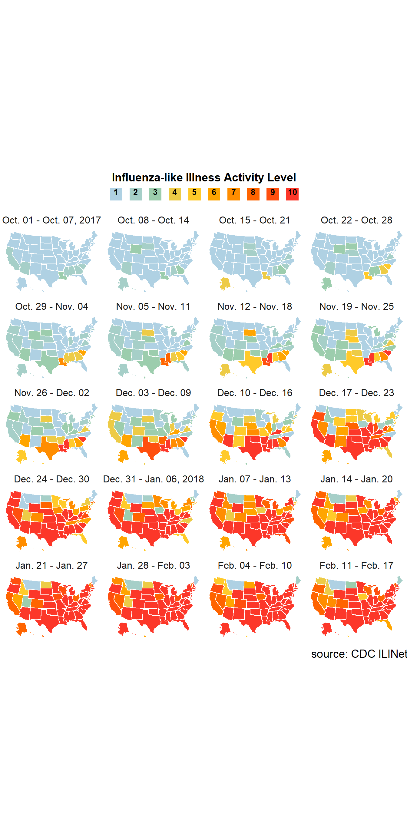

# I always like to load packages at the very top :)
library(knitr) # For including the example plot
library(dplyr) # For data wrangling
library(ggplot2) # For plotting
library(janitor) # For cleaning dataset names
library(lubridate) # For date manipulation
library(forcats) # For factor manipulation
library(stringr) # For string manipulation
library(usmap) # For plotting nice maps easilyFor this week’s exercise, I wanted to recreate this chart of ILI severity by flu season week and state.
knitr::include_graphics(here::here("static", "538-flu-map.png"))The original article can be found at this link and actually provides a pretty decent explanation of some interesting aspects of flu epidemiology and immunology.
In order to recreate the visualization, I downloaded the ILINet surveillance data for the 2017-2018 season from the CDC website. Note that you need to scroll down until you see the ILI Activity Map, and click “download data”.
dat <- read.csv(here::here("static", "ILI.csv"))
str(dat)## 'data.frame': 2805 obs. of 8 variables:
## $ STATENAME : chr "Alabama" "Alaska" "Arizona" "Arkansas" ...
## $ URL : chr "http://adph.org/influenza/" "http://dhss.alaska.gov/dph/Epi/id/Pages/influenza/influenza.aspx%20" "http://www.azdhs.gov/phs/oids/epi/flu/index.htm" "http://www.healthy.arkansas.gov/programs-services/topics/influenza" ...
## $ WEBSITE : chr "Influenza Surveillance" "Influenza Surveillance Report" "Influenza & RSV Surveillance" "Communicable Disease and Immunizations" ...
## $ ACTIVITY.LEVEL : chr "Level 2" "Level 1" "Level 2" "Level 1" ...
## $ ACTIVITY.LEVEL.LABEL: chr "Minimal" "Minimal" "Minimal" "Minimal" ...
## $ WEEKEND : chr "Oct-07-2017" "Oct-07-2017" "Oct-07-2017" "Oct-07-2017" ...
## $ WEEK : int 40 40 40 40 40 40 40 40 40 40 ...
## $ SEASON : chr "2017-18" "2017-18" "2017-18" "2017-18" ...Now, it’s clear that we need to do some data cleaning before we can make the plot, so let’s go ahead and get started with that. The very first things I will do that do not need a lot of explanation are drop the URL and website columns that I don’t need and clean up the yucky variable names so they aren’t yelling at me anymore. Note that I already loaded all the packages I intend to call at the very top of this page, due to previous bad experiences with loading packages in the middle of a script.
dat2 <- dat |>
dplyr::select(-URL, -WEBSITE) |>
janitor::clean_names()
dplyr::glimpse(dat2)## Rows: 2,805
## Columns: 6
## $ statename <chr> "Alabama", "Alaska", "Arizona", "Arkans~
## $ activity_level <chr> "Level 2", "Level 1", "Level 2", "Level~
## $ activity_level_label <chr> "Minimal", "Minimal", "Minimal", "Minim~
## $ weekend <chr> "Oct-07-2017", "Oct-07-2017", "Oct-07-2~
## $ week <int> 40, 40, 40, 40, 40, 40, 40, 40, 40, 40,~
## $ season <chr> "2017-18", "2017-18", "2017-18", "2017-~Next let’s coerce the weekend column into a date, and then use some lubridate magic to get the date that was 6 days earlier, and paste these into a nicely formatted string that we’ll use for the facet labels.
Note that we also only want the weeks of the flu season through February 17th, so I’ll filter for that as well.
# This is a lubridate formatting function to format dates in a nice way.
fmt_stamp <- lubridate::stamp("Oct. 1")## Multiple formats matched: "%Om. %d"(1), "Oct. %Om"(1), "%b. %d"(1), "Oct. %H"(1), "Oct. %m"(1)## Using: "%b. %d"# This part actually formats the date how we want for the plot.
dat3 <- dat2 |>
dplyr::mutate(week_end = lubridate::mdy(weekend)) |>
# we can treat dates like numbers when filtering!
dplyr::filter(week_end < "2018-02-18") |>
dplyr::mutate(
week_start = lubridate::floor_date(week_end, unit = "week"),
week_label = paste(fmt_stamp(week_start), "-", fmt_stamp(week_end)),
# Coerce to ordered factor with orders specified in the order that they
# first appear in the data (which is sorted correctly)
week_label = forcats::fct_inorder(week_label, ordered = TRUE),
# This part adds the years to specific entries
week_label = forcats::fct_recode(
week_label,
"Oct. 01 - Oct. 07, 2017" = "Oct. 01 - Oct. 07",
"Dec. 31 - Jan. 06, 2018" = "Dec. 31 - Jan. 06"
)
) |>
# Get rid of the old weekend column, it doesn't really need to exist anymore
dplyr::select(-weekend)
dplyr::glimpse(dat3)## Rows: 1,080
## Columns: 8
## $ statename <chr> "Alabama", "Alaska", "Arizona", "Arkans~
## $ activity_level <chr> "Level 2", "Level 1", "Level 2", "Level~
## $ activity_level_label <chr> "Minimal", "Minimal", "Minimal", "Minim~
## $ week <int> 40, 40, 40, 40, 40, 40, 40, 40, 40, 40,~
## $ season <chr> "2017-18", "2017-18", "2017-18", "2017-~
## $ week_end <date> 2017-10-07, 2017-10-07, 2017-10-07, 20~
## $ week_start <date> 2017-10-01, 2017-10-01, 2017-10-01, 20~
## $ week_label <ord> "Oct. 01 - Oct. 07, 2017", "Oct. 01 - O~Next let’s clean up the ILI activity levels. The activity_level column should be an ordered factor (the “Level” labels are redundant and unnecessary though so we’ll remove those). This field could also be stored as an integer, but I don’t think it really makes sense to add or subtract ILI activity levels, and I prefer to be explicit about that when choosing data storage modes. I’ll also make the activity_level_label variable an ordered factor.
dat4 <- dat3 |>
# This mutate statement edits the activity_level variable
dplyr::mutate(
activity_level = stringr::str_remove(activity_level, "Level "),
# Set to NA if the activity_level_label is "insufficient data"
activity_level = if_else(activity_level_label == "Insufficient Data",
NA_character_, activity_level),
activity_level = factor(activity_level, ordered = TRUE, levels = 1:10)
) |>
# This mutate statement edits the activity_level_label variable. They could
# have been one mutate statement, but this can help to keep things organized.
dplyr::mutate(
# Set the "Insufficient Data" category to be "true NA"
activity_level_label = if_else(activity_level_label == "Insufficient Data",
NA_character_,
activity_level_label),
# Now do the actual type conversion
activity_level_label = factor(
activity_level_label, levels = c("Minimal", "Moderate", "High"),
ordered = TRUE
)
)
dplyr::glimpse(dat4)## Rows: 1,080
## Columns: 8
## $ statename <chr> "Alabama", "Alaska", "Arizona", "Arkans~
## $ activity_level <ord> 2, 1, 2, 1, 2, 1, 1, 1, 2, 1, 2, 1, 1, ~
## $ activity_level_label <ord> Minimal, Minimal, Minimal, Minimal, Min~
## $ week <int> 40, 40, 40, 40, 40, 40, 40, 40, 40, 40,~
## $ season <chr> "2017-18", "2017-18", "2017-18", "2017-~
## $ week_end <date> 2017-10-07, 2017-10-07, 2017-10-07, 20~
## $ week_start <date> 2017-10-01, 2017-10-01, 2017-10-01, 20~
## $ week_label <ord> "Oct. 01 - Oct. 07, 2017", "Oct. 01 - O~Finally, let’s coerce statename to an unordered factor, then we should be ready to plot. We also need to rename this to “state” for easier plotting. Note that we won’t use a few of the other fields (namely season, week, week_start, or week_end) in the plot, but it’s alright to keep them around anyways.
plot_data <- dat4 |>
dplyr::mutate(
state = factor(statename), .keep = "unused"
)
dplyr::glimpse(plot_data)## Rows: 1,080
## Columns: 8
## $ activity_level <ord> 2, 1, 2, 1, 2, 1, 1, 1, 2, 1, 2, 1, 1, ~
## $ activity_level_label <ord> Minimal, Minimal, Minimal, Minimal, Min~
## $ week <int> 40, 40, 40, 40, 40, 40, 40, 40, 40, 40,~
## $ season <chr> "2017-18", "2017-18", "2017-18", "2017-~
## $ week_end <date> 2017-10-07, 2017-10-07, 2017-10-07, 20~
## $ week_start <date> 2017-10-01, 2017-10-01, 2017-10-01, 20~
## $ week_label <ord> "Oct. 01 - Oct. 07, 2017", "Oct. 01 - O~
## $ state <fct> Alabama, Alaska, Arizona, Arkansas, Cal~Now, we can start making the actual plot. My main strategy for making this plot is to create a US map colored by state, apply a blank theme to the plot, and facet the plot by season week (with 4 columns in the grid).The only thing about the provided plot that I think will be really difficult to do in ggplot is the way the legend is structured, as legends in ggplot are really not very flexible. If I figure out a way to do the legend like this, I’ll update this page with the solution, but for now I don’t think this is possible with ggplot2. (Though I admit I could be wrong, I am just saying I am not going to try to figure it out for the purpose of this assignment).
plot_usmap(data = plot_data, regions = "states", values = "activity_level", color = "white") +
facet_wrap(~week_label, ncol = 4) +
theme(
legend.position = "top",
strip.background = element_blank(),
strip.text = element_text(size = 14),
legend.justification = "center",
legend.title = element_text(size = 14, face = "bold"),
legend.text = element_text(size = 10, face = "bold"),
plot.caption = element_text(size = 14)
) +
scale_fill_manual(
name = "Influenza-like Illness Activity Level",
guide = guide_legend(
label.position = "top",
title.position = "top",
title.hjust = 0.5,
nrow = 1,
label.vjust = -8.5,
title.vjust = -6
),
values = c("1" = "#afd1e3", "2" = "#a6cfc8", "3" = "#9ccdad",
"4" = "#edcb46", "5" = "#ffca2a", "6" = "#ffa500",
"7" = "#ff8d00", "8" = "#ff6400", "9" = "#ff4f0e",
"10" = "#fc3729"),
na.value = "#bcbcbc"
) +
labs(caption = "source: CDC ILINet")
I think this is pretty close to the original plot. The only things that don’t show up are which levels correspond to which category, but as I said before I don’t think this is possible without a lot of extra work, such as by manually redrawing the legend. But I think that this looks overall pretty nice and I am happy with it.